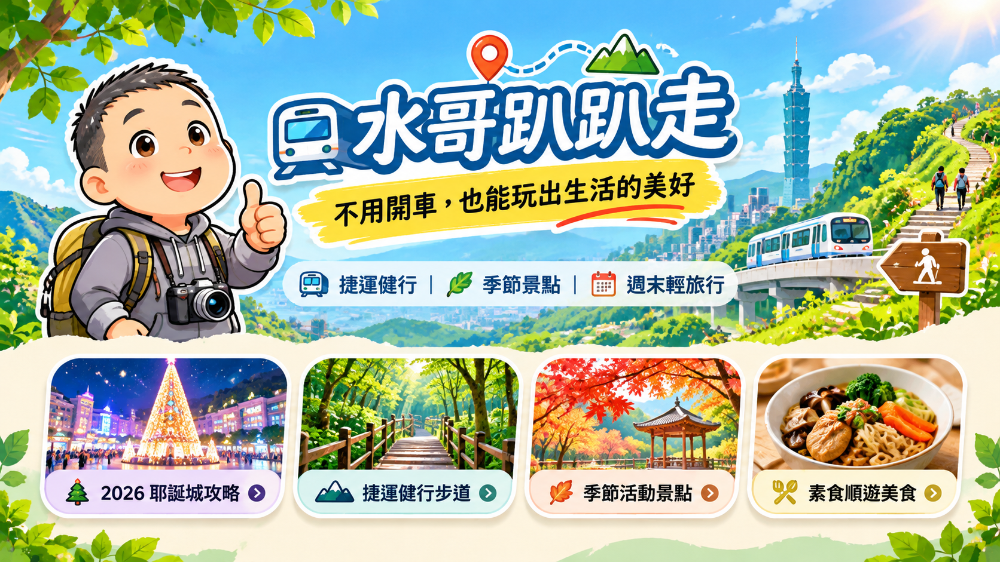
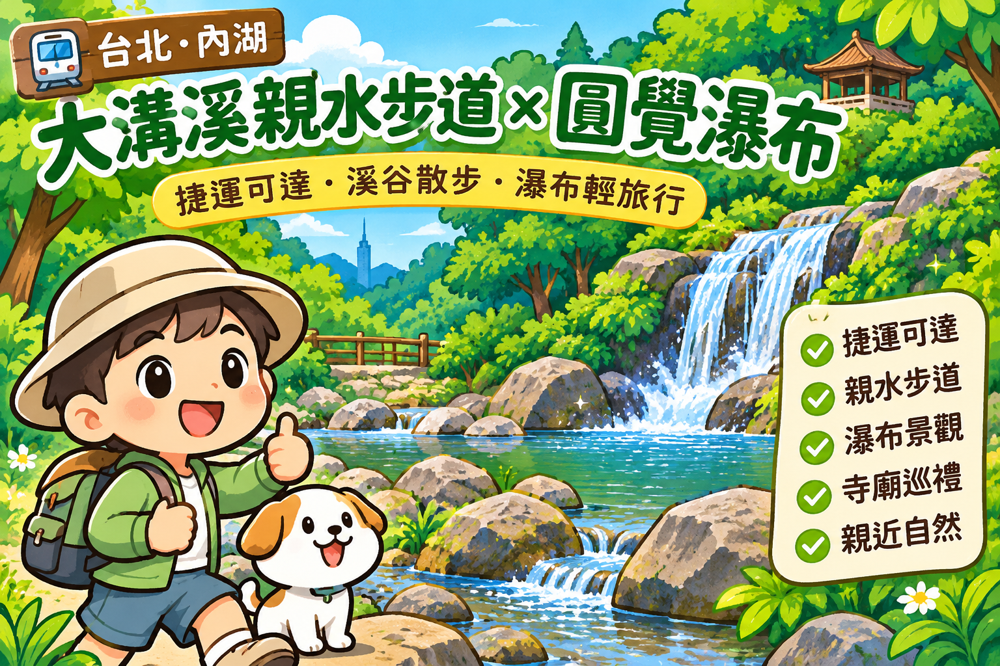

🎄 2026 新北歡樂耶誕城
今年不只板橋！七處響應燈區一次整理，選一區慢慢逛。
查看七區整理 →不用開車，也能玩出生活的美好
・季節景點・週末慢旅行

跟著水哥，搭上捷運、走進山林，把日常過成喜歡的風景。
一區三四點，慢慢走、慢慢看；不用趕行程，也能收集好風景。
除了板橋主燈區，也可以挑一處離家近的燈區，安排晚間散步。
七處是分散各地的響應燈區，不代表每一處都有板橋主燈區同等規模的造景、舞台或表演。適合搭配附近街區散步，別把它當成七個大型主會場喔。
以下是路線靈感，不是即時交通班表；請依當天體力、天氣與官方交通資訊安排。

從捷運大湖公園站出發，沿著溪谷步道走進綠意森林，欣賞瀑布風景，安排一趟不用開車的自然小旅行。
閱讀完整健行攻略 →適合安排半日城市小登山，部分路段有階梯，記得穿防滑鞋。
查看地圖 ↗山林與溪流交錯，適合挑選適合自己的入口與路段，不必一次走完。
查看地圖 ↗水哥與家人喜歡蛋奶素料理，旅行中也會留意適合的蔬食選擇。
喜歡搭捷運、走步道、看展覽、尋找素食美食，也喜歡和家人慢慢旅行。這裡收藏的是生活裡值得停下腳步的風景，希望每一份攻略，都能讓你更輕鬆地出發。